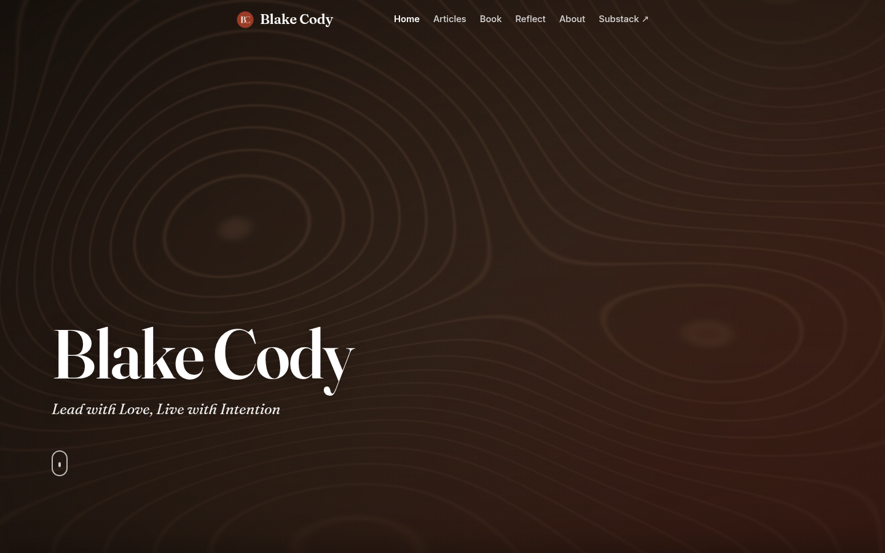
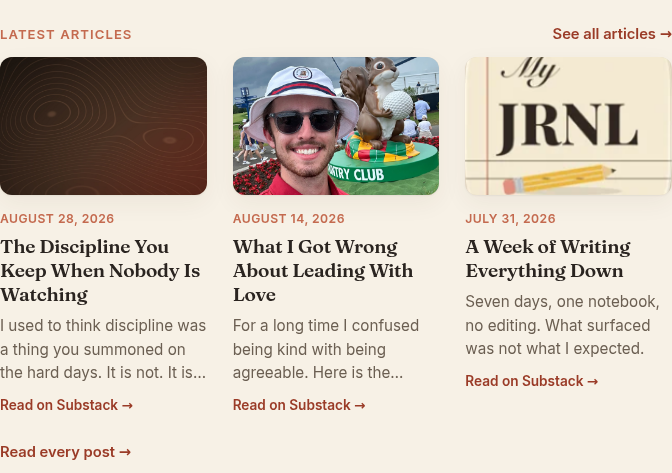
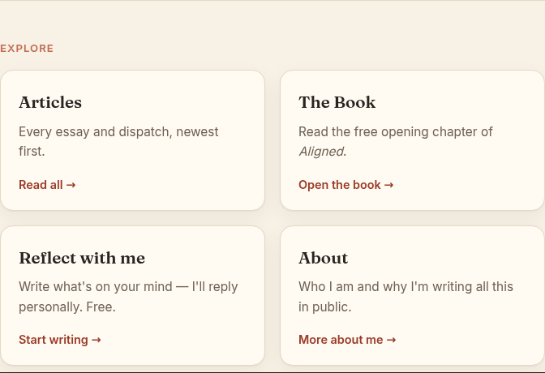
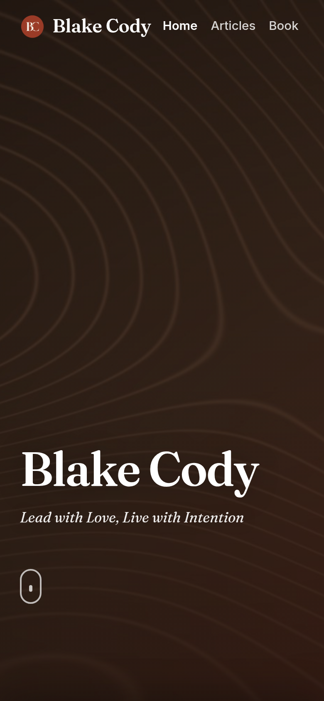

blakecody.com — UI & visual design audit / change log
/ (index.html)| Dimension | Score | The one reason it isn't higher |
|---|---|---|
| First impression (w15) | 5/10 | The first full screen gives a name and a tagline. Nothing says what you get or what to do. |
| Clarity of value (w15) | 5/10 | "Lead with Love, Live with Intention" is a good line, but it's the only claim on the page. |
| Conversion path (w15) | 3/10 | The primary ask is the last thing on the page, under an ad for a different product, with no button. |
| Usability (w15) | 6/10 | Clean and uncluttered, but half the navigation is unreachable on a phone. |
| Information hierarchy (w10) | 4/10 | The iOS app gets the strongest visual treatment on the page. The book gets a body-text mention. |
| Navigation (w10) | 4/10 | Three of six destinations render off-screen on mobile with no menu and no visible affordance. |
| Trust (w10) | 3/10 | No photograph of Blake, no bio, no reader quote, no subscriber count. Nothing but assertion. |
| Product strategy (w5) | 6/10 | "Reflect with me" is a genuinely distinctive offer, buried as one of four equal cards. |
| Accessibility (w5) | 4/10 | Two measured contrast failures, an invisible focus ring, and every tap target under 44px. |
| # | ID | Change | Severity |
|---|---|---|---|
| 1 | R1 | Give mobile a menu button. Right now Reflect, About and Substack are off-screen on a phone with no hamburger and no visible scrollbar. | Critical |
| 2 | H1 | Put an offer and a button in the hero. One full screen currently carries a name, a tagline and a 26px scroll cue. | High |
| 3 | X1 X3 | Move the email capture up and build it in your own palette instead of a bare Substack iframe at 81% scroll depth. | High |
| 4 | H3 V7 | Give the book the visual weight the app currently has — you own a 1350×1800 cover image and never display it. | High |
| 5 | H2 | Use a button. There are zero button elements on the homepage, though .substack-btn already exists in your CSS. | High |

The .cover section measures exactly 1440×900 on desktop and 390×844 on mobile — one full viewport on both. Its entire contents: a 112px name, a 24px tagline, and a 26×42px scroll cue in the bottom-left corner. No value proposition, no offer, no button, no image of the person, nothing to click.
A first-time visitor decides in about five seconds whether to keep going. They need four things: what this is, who it's for, why it matters, and what to do next. This screen answers one — who. The other three sit below a full screen of scrolling, and the page is 3.0 viewports deep on desktop, 4.8 on mobile.
ImpactEvery visitor, at the widest point of the funnel. This is the finding that caps First Impression at 5/10 and it gates everything downstream. Inferred from layout, not measured — confirm with a scroll-depth event (you have no analytics on this today; see the SEO report, K1).
FixMore visitors reach the article row. Measure scroll depth past the fold and clicks on the new hero button.
Measured: querySelectorAll('button, [class*=btn], [class*=button]') returns zero results on the homepage. The only element with any button affordance is the App Store badge — an Apple-supplied graphic advertising a side project.
Every action you want a reader to take — "Read all →", "Open the book →", "Start writing →", "Read on Substack →" — is 13.6–14.4px Inter with a trailing arrow.
Why it mattersText links are for navigation; buttons are for commitment. With no filled shape anywhere, the eye has nowhere to land and no way to rank six competing asks. Arrows all the way down means everything is equally optional.
FixYou have already built the button. styles.css:963 defines .substack-btn — --accent fill, white text, 10px radius, 12×22 padding, hover to #832f1f with a 1px lift. It is used on the About page and nowhere else.
/* already in your stylesheet — just use it */
.substack-btn {
background: var(--accent); color: #fff; border-radius: 10px;
padding: 12px 22px; font-weight: 600;
}
Promote it to a shared .btn / .btn-outline pair and use the solid one at most twice per page — hero and subscribe. Scarcity is the whole mechanism; a page of buttons is the same as a page of none.
A clearer primary path. Measure click-through on the two button placements against the current text links.
The .app-card is the only block below the fold with a dark gradient fill (135deg, #2a201a → #6b4a32 → #9a3b27), a 33.6px serif headline, a 132px icon and a real button. By every measure of visual weight it is the strongest element on the page.
Aligned — the book — appears once, as body text inside one of four identical 327×173 cards: "Read the free opening chapter of Aligned."
Why it mattersVisual weight should track business priority. A reader scanning this page concludes the app is the main event and the book is a footnote. If that's backwards, the layout is actively working against you.
Fixcover.jpg art at a readable size, the title, one line about what it argues, and the chapter offer as a button. Put it where the app card is now.
Inside #latest alone: "See all articles →" (top right), three × "Read on Substack →", and "Read every post →". All in --accent or --accent-soft, all Inter 600 at 13.6–14.7px, all with the same trailing arrow. Two of them go to the same URL (articles.html).
Worse, "Read every post →" sits 46px directly below card 1's "Read on Substack →", so it reads as a fourth line of that card rather than as a section footer.
Why it mattersRepetition without differentiation destroys hierarchy. When five things look equally clickable, the reader stops reading them and picks none.
Fix.see-all-foot). Keep "See all articles →" top-right.Measured at 1440px: cards 1 and 2 place .post-more at y=1325; card 3 at y=1277. A 48px ragged edge, because card 3's title wraps to two lines instead of three. The cards are equal height (360px) but their contents are top-aligned, so the bottoms never line up.
.post-body { display: flex; flex-direction: column; height: 100%; }
.post-more { margin-top: auto; }
Two lines. Titles then align at the top, CTAs at the bottom, and the row reads as a row.
Measured at 1440px: the header's .wrap is 720px and centred, so the brand mark starts at x=360. The hero H1 starts at x=84. Two different left margins, 276px apart, in the same first screen — visible in the hero screenshot above.
A shared left edge is the cheapest way a layout signals intentionality. Two competing ones read as an accident even to people who can't name what's wrong.
FixPut the cover content inside the same .wrap container as the header, or give both the same padding. Given V1, the better move is to widen .wrap and align the hero to it.
Measured: the only layout media query in all 25 KB of styles.css is @media (max-width: 560px). From 561px to any width above, there is a single layout, and .wrap is capped at 720px.
Consequences at 1440px:
On a 1920px display the proportions get worse. The page reads as a phone layout stretched onto a desktop, with the hero as the only element using the full canvas — which is exactly why the hero feels so much stronger than everything below it.
Fix.wrap { max-width: 720px; } /* keep as the base */
@media (min-width: 1024px) { .wrap { max-width: 920px; } }
@media (min-width: 1280px) { .wrap { max-width: 1100px; } }
At 1100px the post cards reach roughly 340px and the thumbnails become real images. This is the single largest visual improvement available for the effort, and it needs no new design work — the existing components just get room to breathe.
Measured against the page background --bg #f7f1e6:
| Element | Colour | Size | Ratio | AA requires |
|---|---|---|---|---|
.section-label"LATEST ARTICLES", "EXPLORE", "NOW ON IOS" | --accent-soft#c46a4f | 13.1px | 3.38 | 4.5 |
.post-metaevery article date | --accent-soft#c46a4f | 12.2px | 3.38 | 4.5 |
Both are small text, so the 3:1 large-text allowance does not apply. Every section label and every date on the site fails.
FixUse --accent #9a3b27 for both — it measures 6.17 on the same background, comfortably AA, and it's already the colour of your links so nothing new enters the palette. If you want to keep the lighter tone distinct, darken --accent-soft to about #a8532f (≈4.6).
Post titles 13.62 · excerpts 5.52 · explore body 5.97 · explore CTA 6.67 · footer 5.52 · nav on the hero 15.31 · hero H1 15.31.
One caveat for whoever runs an automated checker next: it will report the app card's white text at 1.12 and flag it. That is a false positive — .app-card paints its dark background with a linear-gradient (a background-image), which contrast tools can't read, so they fall through to the page cream. The real contrast there is fine.

#fffaf2 on a page of #f7f1e6 — a 1.04:1 surface difference. Four identical boxes for four very different offers.Measured: card background #fffaf2 against a page background of #f7f1e6 — a 1.04:1 surface difference — with a 1px #e4d8c5 border and a shadow at 0.06 alpha. Four identical 327×173 boxes.
This section is the branching point into the rest of the site and it has the least visual energy of anything on the page. And "Reflect with me" — write to me and I'll reply personally, free — carries the same weight as "About".
FixCredit where due: styles.css:624 already gives these a −4px hover lift with an accent border. The hover craft across this site is genuinely good — it just does nothing for the 100% of mobile visitors who never hover, or for anyone deciding where to look first.
Measured: all three thumbnails render at 207×138 (3:2) with object-fit: cover, from natural sizes of:
| Source | Natural | Ratio | What happens |
|---|---|---|---|
| photo | 1600×1000 | 1.60 | fine — near-native crop |
| book cover | 1350×1800 | 0.75 (portrait) | centre-cropped to landscape; most of the image is discarded |
| app icon | 192×192 | 1.00 | upscaled beyond its native width; soft edges |
Beyond the geometry, the three images have completely different tonal weight — a dark abstract, a bright outdoor photograph, a light cream illustration. In the screenshot above, the eye goes to the middle card. Not because it's the best post, but because it's the brightest picture.
Why it mattersThis will keep happening: the thumbnails come from whatever cover art each Substack post has. Without a unifying treatment, your most eye-catching row is at the mercy of arbitrary imagery.
Fix — pick one--accent overlay with mix-blend-mode: multiply, so any incoming image resolves into your palette. Removes the tonal lottery permanently.Post cards: no container, no border, no fill — content floating on the page background.
Explore cards: bordered, filled, 16px radius, shadowed.
App card: dark gradient, no border, 132px icon.
Three systems, one page, no rule a reader could infer about which is which.
FixPick one and let the exception be deliberate. Given the editorial tone, the post cards are the right model — quiet, borderless, image and type doing the work. Bring the Explore cards toward them, and keep the app card as the single, obvious exception.
The scale is genuinely well built. Measured, in use:
| Fraunces (display) | Inter (UI & body) |
|---|---|
| 112px / 600 / −2.24px tracking — hero 33.6px / 600 — app headline 32px / 600 — subscribe 20.8px / 600 — explore heading 19.2px / 600 — post title 17.6–24px / 400 italic — tagline | 16.3px / 400 — app body 15.4px / 400 — explore body 15.2px / 400 — post excerpt 14.7px / 600 — nav, see-all 14.4px / 600 — explore CTA 13.6px / 600 — post CTA 13.1px / 600 / +1.05px — section labels 12.2px / 600 — dates |
The scale jumps from 112px straight to 33.6px. There is no 40–56px tier — exactly the size a section headline or a feature block needs. Everything below the hero lives between 12 and 34px, which is why the page feels visually flat the moment you scroll past the cover.
FixAdd one tier at 44–48px and spend it on the two things you most want read: the book feature (H3) and the subscribe ask (X3). One new size, and the lower page gains a second focal point.
cover.jpg — 1350×1800, 443 KB — sits in the repository. It is the largest asset on the site and the highest-quality piece of art you have. On the homepage it appears nowhere. The book is represented by the words "the free opening chapter of Aligned" in 15px body text inside a small card.
Book cover art is the most conventional trust signal an author has, and it works. Show it: a feature block with the cover at a readable size, a slight shadow or angle, the title in the new 44–48px tier, one line about what the book argues, and the free-chapter offer as a button. This one change fixes H3, V6 and part of X2 at once.
The only human face on the homepage arrived by accident, inside a Substack post thumbnail. For a site whose entire proposition is one person writing honestly about their own life, the homepage never shows that person.
Why it mattersFaces are the most reliable attention anchor in visual design — the eye finds them before anything else. On a personal-brand site they are also the trust signal, and this page currently has none (see X2).
FixAn author block above the footer: a real photograph, two or three sentences in the first person, and links out. It costs one section and it is the difference between "a website about ideas" and "a person you might want to hear from."
Measured: .subscribe-cta begins at y=2220 of 2737px on desktop (81% scroll depth) and y=3545 of 4081px on mobile (87%). It is the final content section — below the article row, below Explore, and below an advertisement for an iOS app.
You are asking a reader to hand over their email after making them scroll past a promotion for a different product. Intent is highest right after someone reads something good, which on this page is the article row — not four screens later.
FixMore signups from the same traffic. Measure the two placements separately (see the SEO report, K1 and K3 — right now neither is measurable at all).
No subscriber count. No reader quote. No book endorsement. No App Store rating. No "as featured in". Nothing.
The page asks for an email address, an app install and a chapter request, and offers no evidence that anyone else has found any of it worthwhile.
Fix — cheapest true version firstUse only real figures. If the numbers are small, use a quote instead of a count — a single genuine reader reply is stronger than "join 47 readers", and inventing a number is the fastest way to lose the trust this whole site is built on.
Measured: .sub-frame is a 160px Substack embed inside a 397px section, with no card, no border, no background differentiation, no image, and roughly 180px of empty space beneath it. Above it sit a centred 32px heading and a two-line subtitle.
Because it is an <iframe>, the form inside renders in Substack's typography and button colour, in the middle of your carefully art-directed cream-and-rust page. You cannot style it.
I could not render the real embed — this environment blocks substack.com — so confirm the visual mismatch in a browser. The structural finding holds regardless of how the embed looks.
Fix.reflect-submit, .chapter-submit) and it looks like your site."Write what's on your mind — I'll reply personally. Free."
That is an unusual, generous, memorable promise, and it is the single strongest reason a stranger would bookmark this site. It receives a 327×173 card identical to the one for "About".
FixBelow the fold the page asks the reader to: read an article on Substack · see all articles · read the book chapter · write a reflection · read the About page · download an iOS app · subscribe by email.
Seven asks, all at roughly equal visual weight, none marked as primary.
FixDecide the one thing a first-time visitor should do — on a writer's site it is almost always subscribe. Make that the only primary button on the page. Demote everything else to text links. This is a subtraction, and subtraction is the change most likely to move the number.

viewport 390 × 844
.nav clientWidth 170 scrollWidth 385 overflow-x: auto
scrollbar height: 0 hamburger present: false
Home x 196 → 238 visible
Articles x 254 → 308 visible
Book x 324 → 360 visible
Reflect x 375 → 424 OFF-SCREEN
About x 441 → 483 OFF-SCREEN
Substack ↗ x 499 → 581 OFF-SCREEN
Why it matters
The nav is horizontally scrollable, so this isn't strictly broken — but there is no visible scrollbar, no hamburger, no gradient mask at the edge, and nothing on screen suggests more items exist. A horizontal swipe inside a 24px-tall strip in a header is an undiscoverable gesture.
In practice, on mobile, half your navigation does not exist — including the Substack link (your subscribe path) and the Reflect page (your most distinctive offer, X4).
ImpactEvery mobile visitor. On a personal writing site that is likely most of them. This blocks two of your three conversion paths outright. Observed, not inferred.
FixBelow 560px, replace the inline nav with a standard menu button and a full-screen panel — you already have the max-width: 560px breakpoint to hang it on. Keeping the horizontal scroller is possible if you add a right-edge gradient mask so it visibly continues, but the menu is the correct answer at six items.
Measured: 11 interactive elements below 44px in at least one dimension.
| Element | Size |
|---|---|
| All six nav links | 24px tall (36–82px wide) |
| "See all articles →" | 119 × 24 |
| "Read every post →" | 131 × 24 |
| "Read on Substack ↗" (footer) | 137 × 23 |
| Scroll cue | 26 × 42 |
| Brand / logo lockup | 158 × 36 |
Apple's HIG and WCAG 2.5.5 both put the comfortable floor at 44×44. WCAG 2.5.8 sets the hard minimum at 24×24 — the nav links sit exactly on that line, meaning they pass the letter of the requirement and fail the intent.
Fix.nav a { padding: 12px 8px; margin: -12px 0; } /* 24px → 48px, no visual change */
.see-all,
.see-all-foot,
.post-more,
.explore-go { padding: 8px 0; }
Negative margins keep the layout identical while doubling the hit area.
Measured on a focused nav link: outline: auto 1px rgb(16,16,16), box-shadow: none — the browser default. A 1px near-black ring around white text on a dark brown header is effectively invisible.
Searching styles.css for focus rules returns three hits, all of them form inputs on the Book and Reflect pages (.chapter-form input:focus, .reflect-form textarea:focus, .reflect-form input:focus). There is no :focus-visible rule anywhere in the stylesheet, and no focus styling at all for links, cards or the nav.
Anyone navigating by keyboard — from choice or necessity — cannot see where they are on your site. It is one of the most common and most consequential accessibility failures, and one of the cheapest to fix.
Fix:focus-visible {
outline: 2px solid var(--accent-soft);
outline-offset: 3px;
border-radius: 4px;
}
.site-header :focus-visible,
.cover :focus-visible { outline-color: #fff; } /* on the dark hero */
Seven lines, applies site-wide, fixes every page at once.
Measured at 390×844: document height 4081px = 4.84 viewports. The cover takes the entire first screen. Post thumbnails render 342×228, so each stacked article card is 355–402px tall and the three of them span roughly two full screens. The subscribe ask arrives at 87% scroll depth.
FixTogether these take the page from ~4.8 screens to roughly 3, and move the primary ask from 87% depth to about 40%.
The intro overlay covers everything for ~6s on the first load of every session, running a 4.6s SVG choreography — name pop, cross arms drawing in, a box tracing the name, a 2s shine hold, then the pieces break away.
As craft it is the most ambitious thing on the site, and it is built thoughtfully: session-gated so it never replays, prefers-reduced-motion-aware, and it fails safe if anything throws.
As product it is a six-second interstitial in front of your content, shown to someone who has not yet decided you're worth their time — and it plays before they have read a single word of your writing. The tolerable range for a brand transition is roughly 0.6–2s; this is three to ten times that.
Fix!document.referrer — someone arriving from a search result came for a specific thing, and an animation is a tax on that intent.Measured: zero prefers-color-scheme rules in styles.css. The palette is a fixed warm light theme, so on a phone at night a full-brightness #f7f1e6 page is genuinely uncomfortable — and reading in bed is exactly when personal essays get read.
Optional, but you are closer than most sites: the hero already establishes #2a201a dark against #f7f1e6 cream as a working pair. A dark variant is largely a matter of swapping the six tokens in :root under a media query, and it would look striking.
The gap on this page is not taste. It is that a well-made object has not yet been asked to do a job.
| Measurement | Result |
|---|---|
| Render environment | Chromium 1194 headless · real Fraunces + Inter woff2 served locally · realistic 8-item feed injected via route interception · intro splash suppressed except where noted |
| Page depth | 1440×900 → 2737px (3.04 folds) · 820×1180 → 3016px · 390×844 → 4081px (4.84 folds) |
| Cover section | Full viewport at every width (1440×900, 390×844) |
| Content column | .wrap = 720px at 1440px viewport (50%) · post cards 207px each · only breakpoint in the stylesheet is max-width: 560px |
| Left-edge alignment | header brand x=360 · hero H1 x=84 · 276px apart |
| Buttons on page | 0 — .substack-btn exists at styles.css:963 but is used only on About |
| Contrast failures | .section-label 3.38 · .post-meta 3.38 (both #c46a4f on #f7f1e6, need 4.5) |
| Card CTA alignment | y=1325, 1325, 1277 — 48px ragged |
| Thumbnails | 207×138 (3:2) via object-fit: cover from 1.60, 0.75 and 1.00 ratio sources |
| Explore cards | #fffaf2 on #f7f1e6 — 1.04:1 surface difference |
| Mobile nav | clientWidth 170 · scrollWidth 385 · 3 items off-screen · no hamburger · scrollbar height 0 |
| Tap targets | 11 elements under 44px; all nav links 24px tall |
| Focus | outline: auto 1px rgb(16,16,16) — browser default; no :focus-visible in the stylesheet |
| Dark mode | 0 prefers-color-scheme rules |
| Not verifiable here | The real Substack embed (X3) — substack.com is blocked by this sandbox's egress policy. Confirm its visual fit in a browser. |
Page 01 of 6 complete. Remaining: articles.html · book.html · reflect.html · about.html · 404.html.
Findings R1, R2, R3, V1, V2, R5 and R6 live in shared markup or styles.css and apply to every page — fixing them once fixes the site. Later reports will cross-reference rather than repeat them.
Companion document: seo/changelog-01-index.pdf — technical, content and tracking findings for the same page.
blakecody.com UI change log · generated 4 September 2026